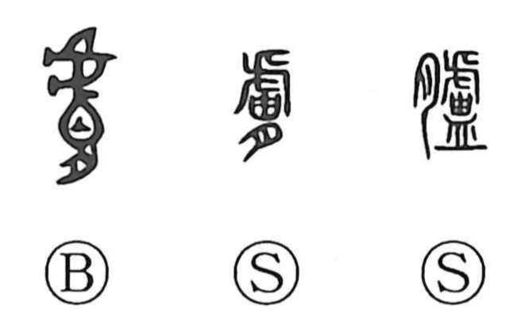

膚

Kun: hada | On: fu
skin ・ superficial
Explanation
A phono-semantic character: in early usage it appears as 臚, with 盧 serving as the sound indicator. The Shuowen glosses 臚 as 皮 “skin” and also cites the form 膚; in bronze inscriptions, the graph is written 膚 and seems to be the original shape. In archaic verse 膚 rhymes with 胡 and 余, indicating it once followed the 盧 series in pronunciation before settling into the later on-reading fu. Its basic sense is “skin,” and from the thinness of the skin (as in 皮膚) comes a figurative use for what is thin or superficial (膚薄, 膚浅). 完膚 names intact, uninjured skin and by extension an undamaged state, giving rise to 完膚無きまで, “to the point that no uninjured skin remains,” meaning thoroughly or to the last degree.